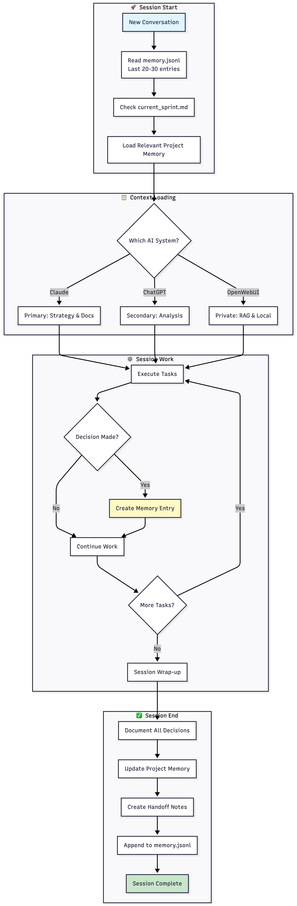
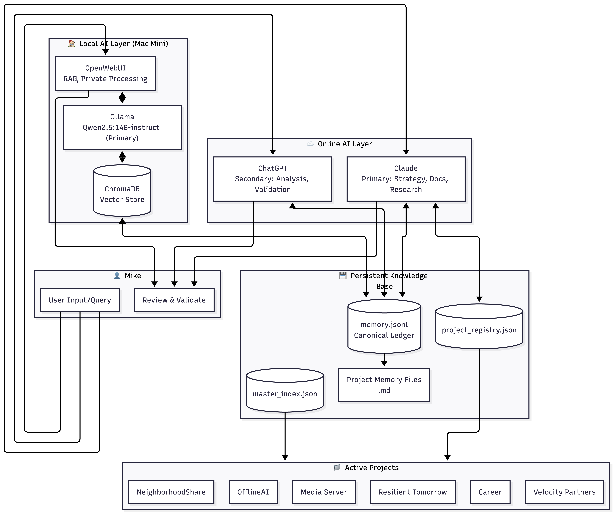
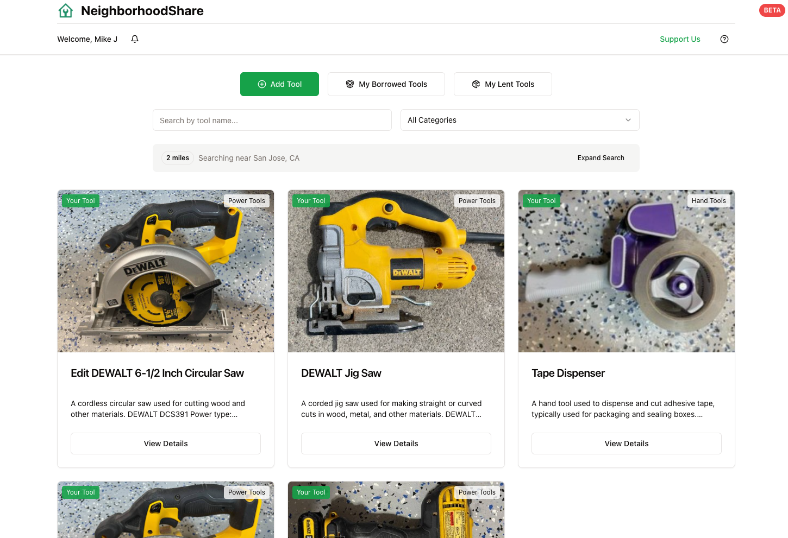

Corvus
A persistent personal AI agent — semantic memory on local Ollama embeddings, hybrid Python + LLM execution, and cron-driven daily briefings. Privacy-first, runs on a Mac Mini.
Three case studies, written from the receipts: what blocked use, what I designed next, and what I still have not proven. The full index of systems sits below them.
Each one is a working product I own end to end. The diagnosis, the decisions, and the honest residue, in that order.
The legacy beta is activation without retention, caused by behavioral frequency rather than product quality.
wound down, rebuiltRead the case study case studyThe problem was the stretch between a stranger's first click and the owner's second week.
live, zero paying usersRead the case study case studyAdvice that depends on remembering to apply it is advice for a brain that is not asking.
29 runs, one userRead the case studyFour running ventures. All four links lead off-site.
Nine systems, grouped by what they do. Screenshots are real. The NeighborhoodShare entry links to its case study.
A persistent personal AI agent — semantic memory on local Ollama embeddings, hybrid Python + LLM execution, and cron-driven daily briefings. Privacy-first, runs on a Mac Mini.

A cross-AI JSONL memory layer I built because no tool had one — Claude had no persistent memory, ChatGPT's couldn't be exported, my local model's couldn't be reached. A shared ledger (plus a validation agent) gives all three persistent, shared context.

A privacy-first, self-hosted LLM stack — Ollama, OpenWebUI, and an MCP bridge, auto-starting and always on.
An operations dashboard for a fleet of AI agents, with ADHD-aware UX — a "Three Things" focus widget, brain-dump triage, and a signal-filtered activity feed.
A multi-agent org structure — a chief-of-staff agent plus ops, sales, and product agents coordinating across every venture.
A fully self-hosted media stack — Jellyfin, Radarr/Sonarr automation, VPN kill-switch, mergerfs storage, Tailscale remote access — documented so anyone can run it.
Full build guide (June 2026)A privacy-first home voice system — Home Assistant + Wyoming with on-prem speech, routing deterministic commands locally and complex queries to a local LLM.
A DIY-designed residential solar + 32 kWh battery system — full energy modeling, structural and permitting work, phased rollout, at a fraction of installer cost.

A neighbor-to-neighbor tool-sharing platform — snap a photo and AI catalogs the tool down to brand and model. It reached 170 users across 20 communities before I wound it down: tool-sharing proved too infrequent to stay top-of-mind. I'm folding the idea into a larger, multi-purpose community platform.
Read the case studyVelocity Partners handles exactly this: making AI actually work inside organizations. Email starts the same conversation.